MIREKU
JM Set · MKS · FM · Strings
James Mireku's keyboard sounds in one instrument, built for the stage. Seventy-eight of his electric pianos, synths, FM keys, strings, pads and choirs, four at a time, with his own performances ready to play.
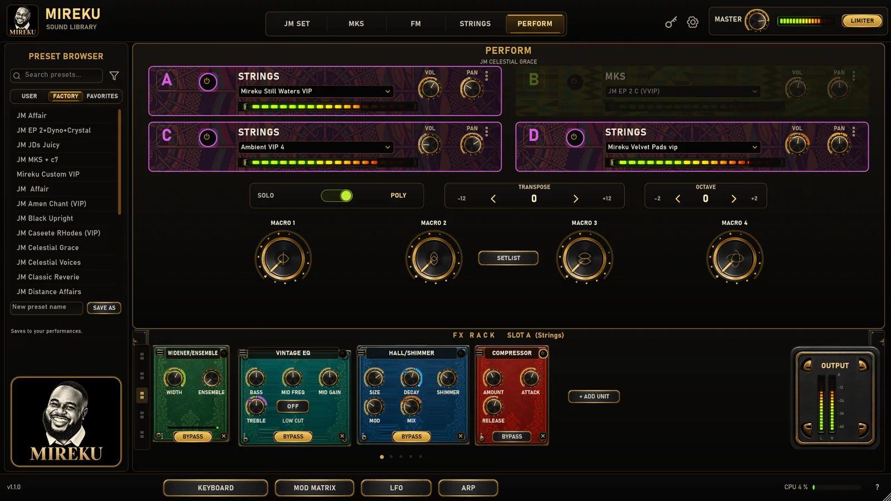
- 78Instruments
- 22Performances
- 4At once
- 16Effects
Every sound recorded and voiced by James
Each world has its own controls, shaped for the instruments inside it.
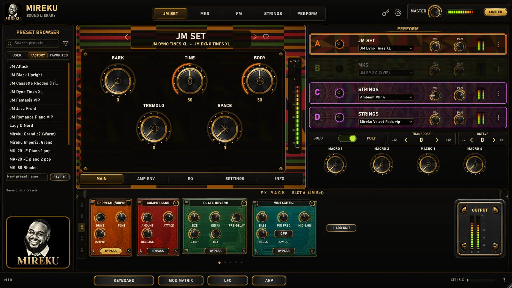
His electric pianos
His electric pianos, from bright tines to warm, worn keys, each with the bark and body under your hands.
- Bark
- Tine
- Body
- Tremolo
- Space
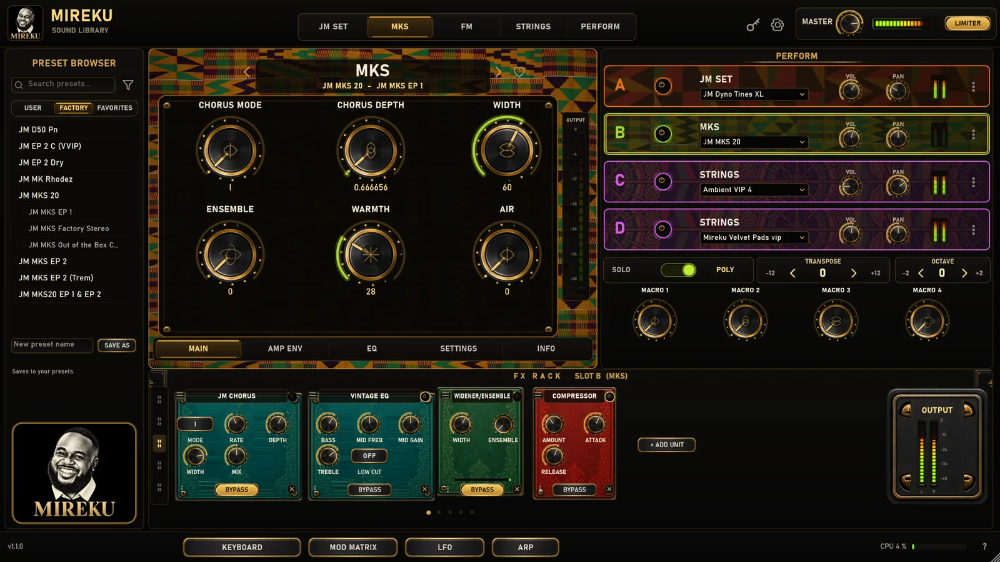
MKS keys
His MKS keys, with the chorus, width and ensemble shaped in.
- Chorus mode
- Chorus depth
- Width
- Ensemble
- Warmth
- Air
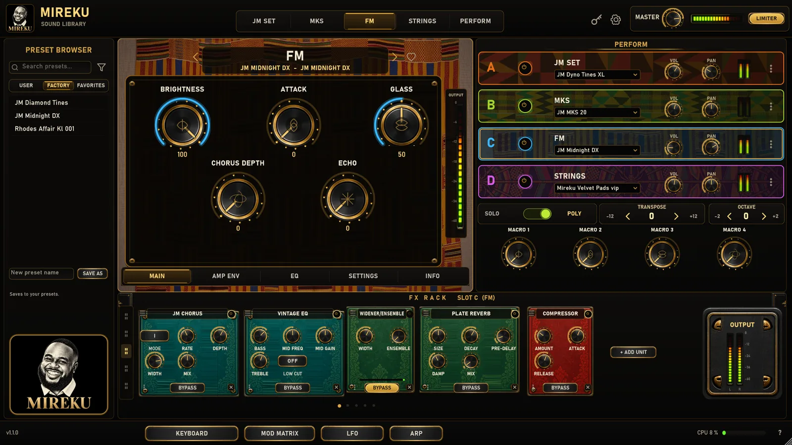
FM keys
Glassy FM keys, with brightness, attack and glass to shape the bell.
- Brightness
- Attack
- Glass
- Chorus depth
- Echo
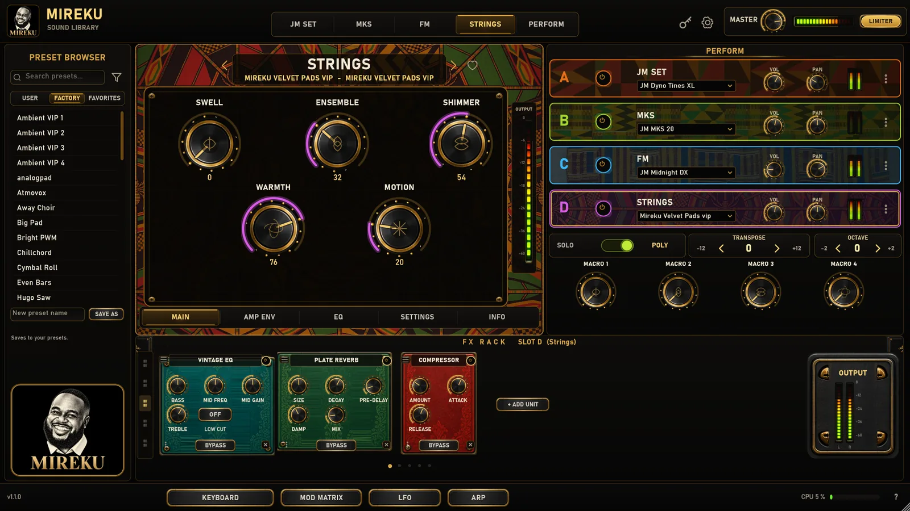
Strings, pads and choirs
His strings, pads, choirs, brass and ambient sounds, for the spaces between the songs.
- Swell
- Ensemble
- Shimmer
- Warmth
- Motion
Change sound without a gap
Loading another performance never cuts the sound. Notes you are holding, or holding with the pedal, keep sounding from the previous instrument until you let them go, and the effects hand over without a click.
Put the songs in order, each with the performance it plays. Step through with Prev and Next or a MIDI program change. Each song keeps its scenes, such as verse, chorus and bridge, and one tap brings back every instrument, knob, effect and macro while held notes keep sounding.
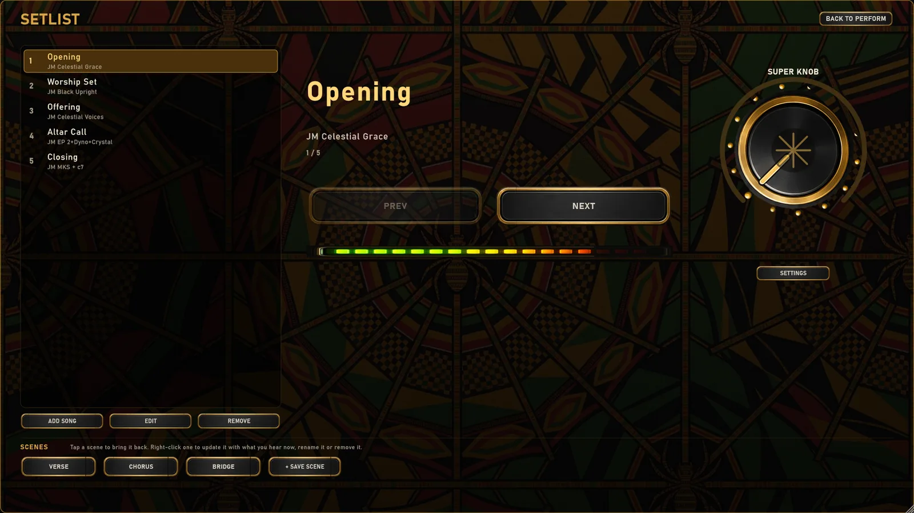
Four at once
Perform plays four instruments together, A to D, each with its own volume, pan, octave and key range. Layer two, or split them across the keyboard.
The super knob
One control moves every macro linked to it, each over its own range. A whole build-up under one hand.
Played your way
Five velocity curves, MIDI learn on any knob, expression on the master level, and four stereo outputs in the standalone and in a DAW.
Sixteen effects, in any order
Every instrument has its own rack: chorus, tremolo, phaser, flanger, preamp, vintage EQ, compressor, tape and digital delay, plate and hall reverb, widener, tape machine, modulator, JM Modulation and JM Rotary.
Macros, a modulation matrix, three LFOs and an arpeggiator open on one page. Every sound is tagged by instrument, mood and use, so a search for "warm pad" finds a sound named neither.
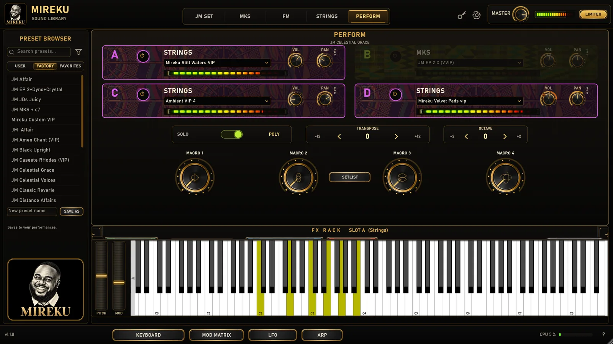
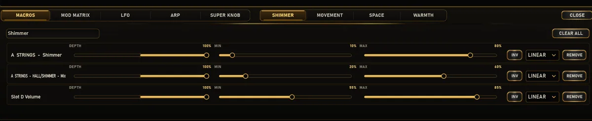
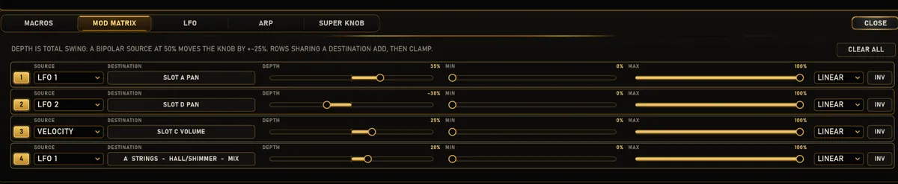
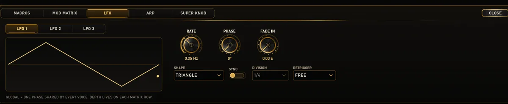
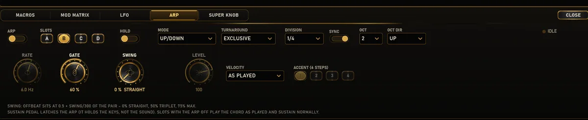

James Mireku
Every instrument in MIREKU was recorded and voiced by James Mireku, and the twenty-two performances that come with it are his own. It is the rig he plays, made so you can play it too.
Made with James by Amanorsac Studio.
What it runs on
| Windows | macOS | |
|---|---|---|
| Formats | Standalone, VST3 | Standalone, VST3, Audio Unit |
| System | 64-bit Windows | macOS 11 or later, Apple silicon and Intel |
| Installer | 42 MB | 135 MB, signed and notarised |
| Library | 5.4 GB download, about 5.8 GB of audio. | |
James's whole rig, in one instrument
MIREKU is in testing. It goes on sale here when it is ready.
- All 78 instruments and 22 performances
- Standalone, VST3 and Audio Unit, Windows and Mac
- Your licence key and downloads on your account page
- Pay with mobile money, bank transfer or a card
Already bought it? Open your account